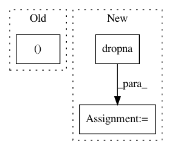

fc8c76feb95fe5fb988441b6b42cb29be2369c0f,pynets/utils.py,,collect_pandas_df_make,#Any#Any#Any#Any#,217
Before Change
std_val = float(df_concatted_std[measure])
weighted_means.append((df_concat.loc[:, measures][measure] *
np.array(1/(df_concat.loc[:, measures][measure])/std_val)).sum() /
np.sum(np.array(1/(df_concat.loc[:, measures][measure])/std_val)))
else:
weighted_means.append(np.nan)
df_concatted_weight_means = pd.DataFrame(weighted_means).transpose()
After Change
means = []
for measure in measures:
if measure in df_concatted_std.columns:
valsA = df_concat.loc[:, measures][measure].dropna()
valsB = valsA[(valsA.T != 0)]
means.append(np.nanmean(valsB))
else:
means.append(np.nan)
df_concatted_weight_means = pd.DataFrame(means).transpose()
In pattern: SUPERPATTERN
Frequency: 3
Non-data size: 3
Instances
Project Name: dPys/PyNets
Commit Name: fc8c76feb95fe5fb988441b6b42cb29be2369c0f
Time: 2018-11-05
Author: dpisner@utexas.edu
File Name: pynets/utils.py
Class Name:
Method Name: collect_pandas_df_make
Project Name: ClimbsRocks/auto_ml
Commit Name: 33851dea0f6c75ca1e685037393ea7160506b53a
Time: 2016-10-08
Author: climbsbytes@gmail.com
File Name: auto_ml/predictor.py
Class Name: Predictor
Method Name: _prepare_for_training
Project Name: merenlab/anvio
Commit Name: 2be6f9614d7a11ea88283ce1b4ad363d10c133c2
Time: 2019-08-13
Author: quentin.clayssen@gmail.com
File Name: anvio/taxoestimation.py
Class Name: SCGsTaxomy
Method Name: make_rank_matrix